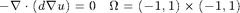
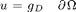
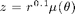
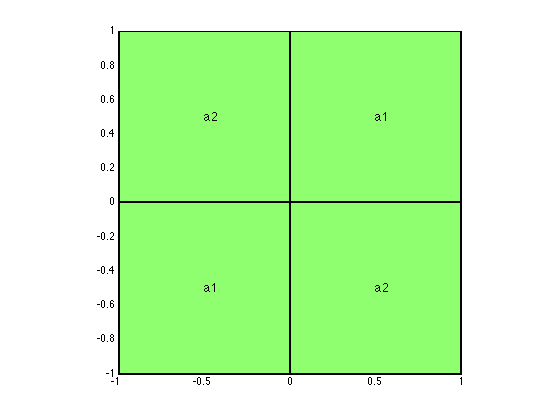
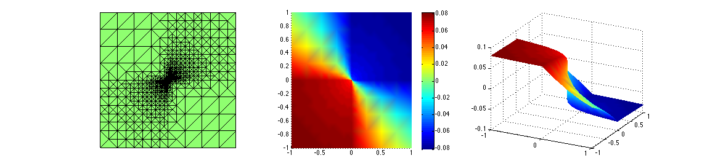
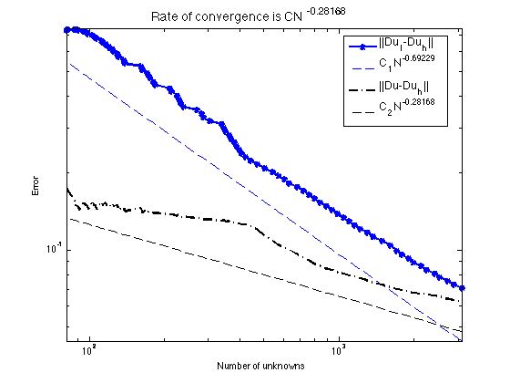

Contents
KEOLLOGG Problem
KELLOGG solves a diffusion equation with jump coefficients with AFEM.
KELLOGG solves the problem within maxN number of vertices. The input argument theta is a parameter used in the marking step.
The KELLOGG command, if no input arguments, use maxN = 5e3 and theta = 0.5.
EXAMPLE
Kellogg
See also crack, Lshape
TODO: rewrite M-lint
Created by Chen-Song Zhang. Modified by Long Chen.
Copyright (C) Long Chen. See COPYRIGHT.txt for details.
close all
Problem setting


The diffusion constant is discontinous; see the figure below. We set a2 = 1; a1 = 161.4476387975881 and choose boundary condition g_D such that the exact solution is  in the poloar coordinate, where the formula of mu can be found in exactu function.
[x,y] = meshgrid(-1:1:1,-1:1:1); z = 0*x; surf(x,y,z,'linewidth',2); view(2); axis equal; axis tight; text(0.5,0.5,'a1','FontSize',12,'FontWeight','bold'); text(-0.5,-0.5,'a1','FontSize',12,'FontWeight','bold'); text(-0.5,0.5,'a2','FontSize',12,'FontWeight','bold'); text(0.5,-0.5,'a2','FontSize',12,'FontWeight','bold');
Parameters
maxN = 3e3; theta = 0.2; maxIt = 1000; N = zeros(maxIt,1); uIuhErr = zeros(maxIt,1); errH1 = zeros(maxIt,1);
Generate an initial mesh
[node,elem] = squaremesh([-1 1 -1 1], 0.25);
bdFlag = setboundary(node,elem,'Dirichlet');
Set up PDE data
pde = Kelloggdata;
Adaptive Finite Element Method
SOLVE -> ESTIMATE -> MARK -> REFINE
for k = 1:maxIt % Step 1: SOLVE [u,Du,eqn] = Poisson(node,elem,pde); % Plot mesh and solution figure(1); showresult(node,elem,u,[27,26]); % Step 2: ESTIMATE % eta = estimaterecovery(node,elem,u); % recovery type eta = estimateresidual(node,elem,u,pde); % residual type % Record error and number of vertices uI = pde.exactu(node); uIuhErr(k) = sqrt((uI-u)'*eqn.A*(uI-u)); errH1(k) = getH1error(node,elem,@pde.Du,Du); N(k) = size(node,1); if (N(k)>maxN), break; end % Step 3: MARK markedElem = mark(elem,eta,theta); % Step 4: REFINE [node,elem,bdFlag] = bisect(node,elem,markedElem,bdFlag); end
Multigrid V-cycle Preconditioner with Conjugate Gradient Method #dof: 2132, #nnz: 12344, iter: 8, err = 5.8395e-09, time = 0.18 s Multigrid V-cycle Preconditioner with Conjugate Gradient Method #dof: 2242, #nnz: 12986, iter: 8, err = 3.1593e-09, time = 0.21 s Multigrid V-cycle Preconditioner with Conjugate Gradient Method #dof: 2412, #nnz: 13940, iter: 8, err = 3.3831e-09, time = 0.18 s Multigrid V-cycle Preconditioner with Conjugate Gradient Method #dof: 2535, #nnz: 14631, iter: 8, err = 4.2176e-09, time = 0.17 s Multigrid V-cycle Preconditioner with Conjugate Gradient Method #dof: 2730, #nnz: 15708, iter: 8, err = 6.8518e-09, time = 0.19 s Multigrid V-cycle Preconditioner with Conjugate Gradient Method #dof: 2880, #nnz: 16522, iter: 8, err = 6.7943e-09, time = 0.19 s Multigrid V-cycle Preconditioner with Conjugate Gradient Method #dof: 3102, #nnz: 17692, iter: 8, err = 6.1075e-09, time = 0.22 s
Plot convergent rates in energy norm
N = N(1:k); uIuhErr = uIuhErr(1:k); errH1 = errH1(1:k); figure(2) showrate2(N,uIuhErr,10,'-*','||Du_I-Du_h||',... N,errH1,10,'k-.','||Du-Du_h||');